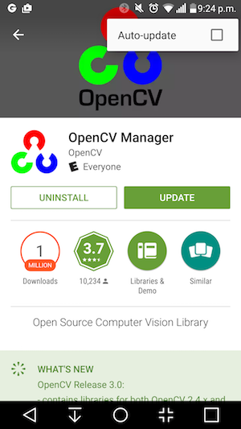
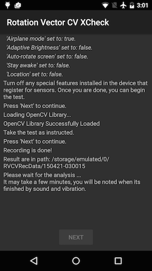
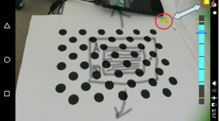
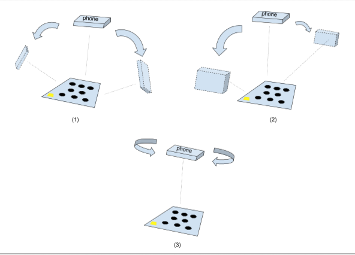
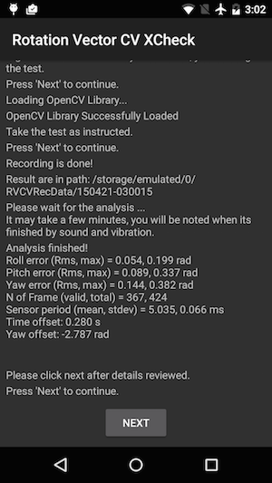
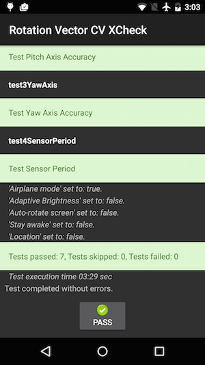

Figure 1. Thumbnail of test pattern. Download the full-resolution image linked above.
This page provides the steps to properly test the compatibility of your rotation vector sensor implementation. This test should be run when the device declares the TYPE_ROTATION_VECTOR composite sensor feature. See this video tutorial for additional details.
Testing
- Install OpenCV Manager on the Android device being tested.
- Download the OpenCV SDK from OpenCV.org. Select OpenCV for Android with version 3.0.0.
- Find the APK
from the
apkfolder inside the downloaded archive. Consult installing an application for the command to load APKs onto the Android device from computer. - If there is active account logged into Google Play, also locate
OpenCV Manager in Google Play and disable Auto-update in the context menu
(the popup menu from the "..." button).

Figure 2. Disabling Auto-update in Google Play.
- Print out the linked test pattern,
disabling any scaling options when printing. The pattern should fit US
Letter paper in landscape or anything bigger.
Note: The inline picture above is low resolution and just for illustration. Please do not directly print it as your pattern.
- Place the pattern on a horizontal surface.
- Start the Rotation Vector CV Crosscheck in the CTS Verifier
app. Follow the guide to turn on airplane mode, turn off auto rotate, and
adjust adaptive brightness and location if these changes have
not been made.
Figure 3. Initiating the test.
- When the video preview appears, place the phone three feet (or one meter) over
the pattern so the main camera is facing the pattern with yellow marker on the
screen and yellow marker on the pattern aligned at the same corner.
Figure 4. Placing the test pattern.
- While keeping the pattern entirely in the camera view, rotate the Android
device under test (DUT) around the pattern in three different directions, one
by one (1, 2 and then 3 illustrated in picture below) as prompted by the
rotation range indicator. Keep movement smooth and steady for the best result.
Figure 5. Manipulating the device under test.
- After the capture, the camera preview will disappear and the analysis process
will start. Wait patiently for analysis to finish; it usually takes one to five
minutes depending on the phone performance. The phone will sound and vibrate at
analysis completion. A numerical result will be presented on screen if the
analysis is successful.
Figure 6. Finishing the test.
- Click next to proceed to the pass/fail screen and review the result.
Figure 7. Passing the test.
- Follow these tips for best results:
- Since this is a manual test with complexity, you may want to try it a few times for the best results.
- Accelerometer, gyroscope, and magnetometer should be calibrated before testing for good results.
- See this video tutorial for additional details.
Troubleshooting
- Symptom: Test crashed when starting test case or immediately after finishing video recording.
Cause: Likely an OpenCV Manager compatibility issue. Checklogcatto confirm. If confirmed, check version and arch of the installed OpenCV Manager. - Symptom: Test fails frequently due to "Too many invalid frame" errors.
Cause: Likely due to video quality. Confirm the following conditions:- There is enough ambient lighting for the test. Natural light usually gives the best result. However, when it is not available, abundant light from multiple angles that does not form obvious shadows works, as well. Avoid low angle lighting to reduce glare.
- The motion during video taking is smooth. Jerky movement causes blur and confuses the computer vision software.
- The pattern should always be entirely in video preview frame and located around the center. The pattern should be 1/4 ~ 1/2 the size of the video preview window. If the pattern is too small, the accuracy is reduced. If the pattern is too big, lens distortion is more obvious, and it is more difficult to keep the pattern always inside video recording frame.
- The camera is able to focus well. Some devices have trouble in focusing during video recording. This is usually due to there is too few variations in the scene, e.g. solid color smooth floor surface. Moving test pattern to a place with textured surface or introducing objects around the test pattern usually helps.
- Image stabilization is turned off.
- Symptom: The pitch and roll test works fine, but the yaw test regularly fails.
Cause: First, make sure the magnetic field sensor is well calibrated. Rotation vector does not function well if magnetic field sensor is not calibrated.
It is also possible that yaw axis fails due to video taking. Hold the device steady and walk/move around the test pattern for the yaw section of test. It is hard to maintain the quality of video while rotating device in hand.
Reporting feedback
If the steps above do not help, please make sure to follow the feedback steps below to report your issue.
Please gather the following information when reporting a bug:
- Android bugreport
- Screenshot if there is any error message on screen.
- Contents of
/sdcard/RVCVRecData/. This folder contains video files and thus can be quite large if the test has already been taken multiple times. Clearing the folder and performing the test again will help reduce size. Inspect video files inside to find obvious issues in recording. - Screenshot of the OpenCV Manager app.